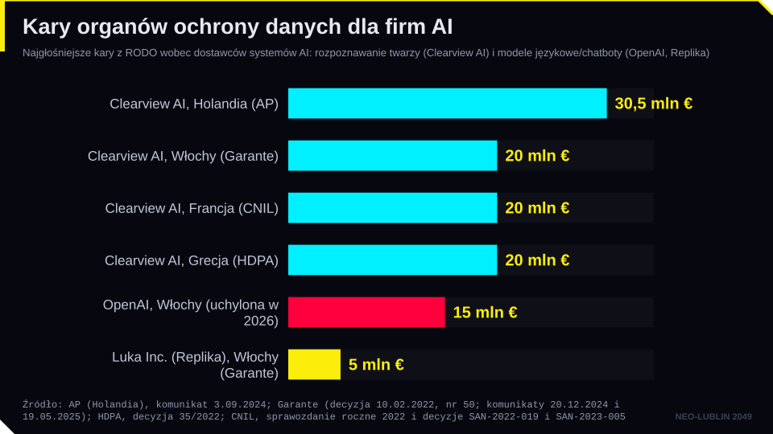
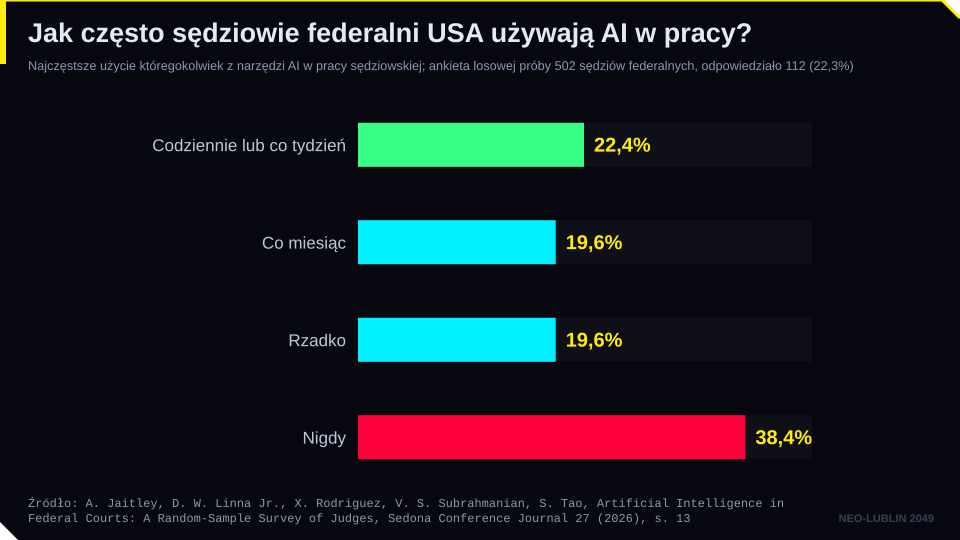
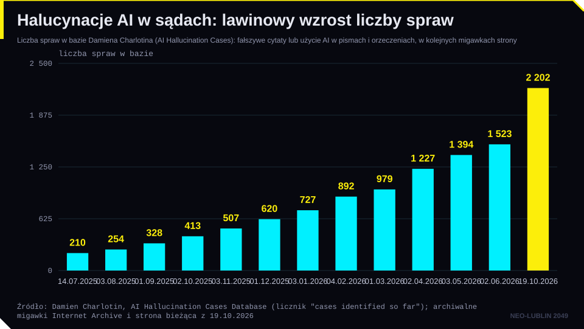
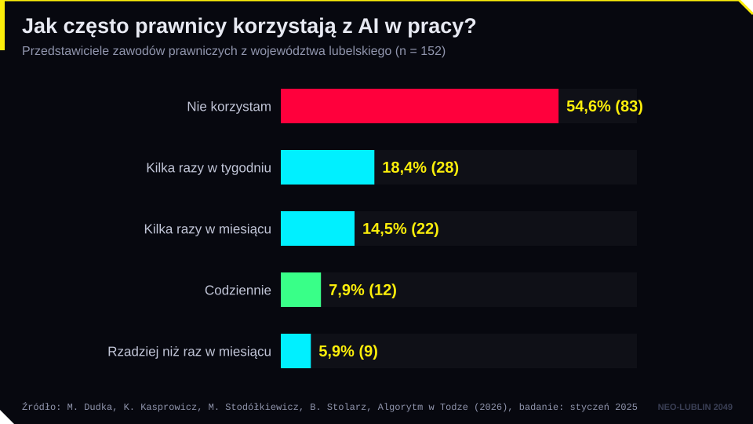
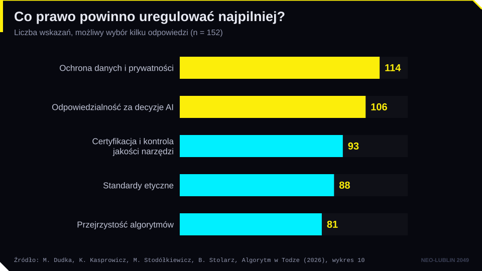
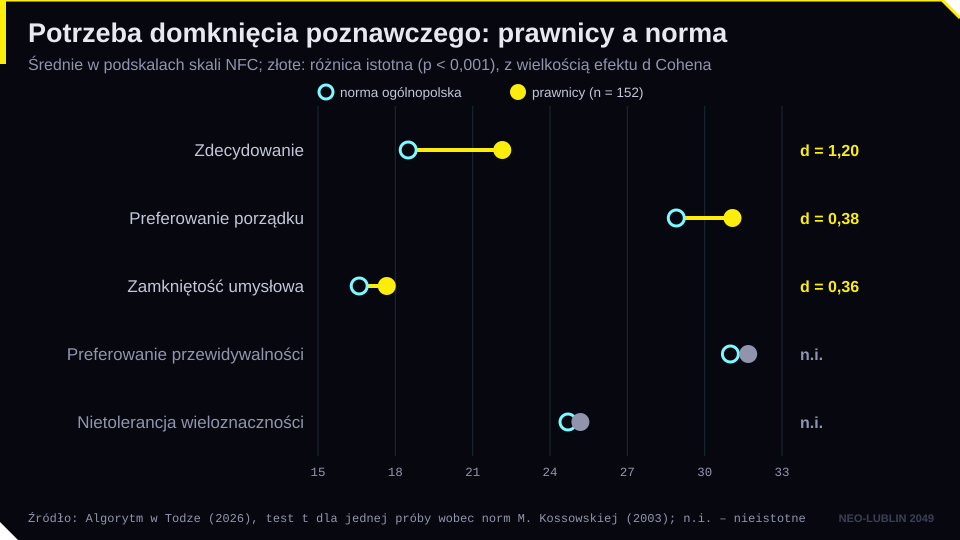

Cel modułu. Po zajęciach student potrafi: zastosować podstawowe zasady RODO do trenowania i używania modeli AI; wskazać zakazy AI Act dotyczące biometrii i przykłady decyzji organów ochrony danych; dobrać podstawę odpowiedzialności cywilnej za szkodę wyrządzoną z udziałem AI (kodeks cywilny, dyrektywa 2024/2853) i wyjaśnić znaczenie wycofania projektu dyrektywy o odpowiedzialności za AI; omówić granice odpowiedzialności karnej i spór o osobowość prawną AI; ocenić obowiązki sędziów i pełnomocników korzystających z AI, w tym w świetle spraw Mata v. Avianca i NSA I FZ 104/26 oraz badania „Algorytm w Todze”.
Pytanie przewodnie. Kto odpowiada, gdy AI się myli: dostawca, użytkownik, czy nikt?
1. Ochrona danych osobowych a AI
RODO nie zawiera słowa „sztuczna inteligencja”, ale obejmuje każde przetwarzanie danych osobowych, także przez systemy AI. AI Act nie wyłącza RODO (art. 2 ust. 7 AI Act). Warto myśleć o trzech etapach życia modelu.
Trenowanie. Modele uczą się na ogromnych zbiorach danych, często pobranych z internetu. Pierwsze pytanie to podstawa prawna (art. 6 RODO). Dostawcy najczęściej powołują się na prawnie uzasadniony interes (art. 6 ust. 1 lit. f). Europejska Rada Ochrony Danych w opinii 28/2024 z 17 grudnia 2024 r. wskazała, że wymaga to trzystopniowego testu: istnienia uzasadnionego interesu, niezbędności przetwarzania i wyważenia z prawami osób, z uwzględnieniem ich rozsądnych oczekiwań. EROD uznała też, że model wytrenowany na danych osobowych nie zawsze jest anonimowy, a bezprawne trenowanie może wpływać na legalność dalszego używania modelu. Dane szczególnych kategorii (zdrowie, poglądy, biometria) wymagają dodatkowej podstawy z art. 9.
Wdrożenie. Użytkownik wpisuje do modelu polecenia, często zawierające dane osobowe. Kancelaria, która wkleja do czatu akta klienta, jest administratorem tych danych. Dostawca narzędzia może być podmiotem przetwarzającym, ale tylko wtedy, gdy umowa wyklucza wykorzystanie danych do jego własnych celów, np. trenowania.
Wynik. Model może generować informacje o realnych osobach, także fałszywe. Organizacja noyb złożyła w 2025 r. skargę do norweskiego organu ochrony danych, bo ChatGPT przypisał mężczyźnie zabójstwo jego dzieci. Art. 5 ust. 1 lit. d RODO wymaga prawidłowości danych, a art. 16 daje prawo do ich sprostowania. Wykonanie tego prawa wobec modelu jest technicznie trudne, ale ostrzeżenie „model może popełniać błędy” nie zwalnia z obowiązku.
Ważne są też zasady minimalizacji danych i ograniczenia celu (art. 5), uwzględnianie ochrony danych w fazie projektowania (art. 25) oraz ocena skutków dla ochrony danych (DPIA, art. 35) przy przetwarzaniu wysokiego ryzyka. AI Act dodaje ocenę skutków dla praw podstawowych (FRIA, art. 27) dla m.in. podmiotów publicznych stosujących systemy wysokiego ryzyka. FRIA uzupełnia DPIA. Decyzje zautomatyzowane (art. 22 RODO) i wyroki TSUE w sprawach SCHUFA i Dun & Bradstreet Austria omawialiśmy na spotkaniu 5.
2. Naruszenia prywatności przez systemy AI
Najostrzej reaguje się na rozpoznawanie twarzy. Amerykańska firma Clearview AI zbudowała bazę miliardów zdjęć pobranych z internetu bez wiedzy osób i sprzedawała dostęp m.in. policji. Organy ochrony danych Włoch, Francji i Grecji nałożyły na nią po 20 mln euro kary (2022), a holenderski organ 30,5 mln euro (decyzja ogłoszona we wrześniu 2024 r.). Holenderski organ uznał, że kody biometryczne to dane szczególnej kategorii, a żaden wyjątek z art. 9 RODO nie ma zastosowania.

AI Act zakazuje dziś (od 2 lutego 2025 r.):
- tworzenia baz rozpoznawania twarzy przez nieukierunkowane pozyskiwanie wizerunków z internetu lub monitoringu (art. 5 ust. 1 lit. e);
- kategoryzacji biometrycznej w celu wnioskowania o rasie, poglądach politycznych czy orientacji seksualnej (art. 5 ust. 1 lit. g);
- zdalnej identyfikacji biometrycznej w czasie rzeczywistym w przestrzeni publicznej do celów ścigania, z wąskimi wyjątkami i po uprzednim zezwoleniu (art. 5 ust. 1 lit. h);
- przewidywania popełnienia przestępstwa przez osobę wyłącznie na podstawie profilowania (art. 5 ust. 1 lit. d).
Pozostałe systemy identyfikacji biometrycznej oraz wiele systemów używanych przez organy ścigania to systemy wysokiego ryzyka (zał. III pkt 1 i 6).
Organy nadzorcze zajmują się też dostawcami modeli językowych. Włoski Garante w marcu 2023 r. czasowo ograniczył działanie ChatGPT, a w grudniu 2024 r. nałożył na OpenAI 15 mln euro kary (m.in. za brak podstawy prawnej trenowania i brak weryfikacji wieku). Według informacji na stronie Garante sąd w Rzymie w marcu 2026 r. uwzględnił sprzeciw OpenAI wobec tej decyzji. W Polsce Prezes UODO prowadzi postępowanie wobec OpenAI wszczęte po skardze z 2023 r. Stosowanie RODO do AI jest wciąż przedmiotem sporów.
3. Odpowiedzialność cywilna za szkody wyrządzone przez AI
Systemy AI stwarzają lukę odpowiedzialności. W łańcuchu dostaw jest wiele podmiotów (dostawca modelu, twórca aplikacji, integrator, użytkownik), działanie systemu jest nieprzejrzyste, a system zmienia się po wdrożeniu. Poszkodowany ma trudność z wykazaniem winy i związku przyczynowego.
Polskie prawo ma kilka reżimów, które można zastosować:
- art. 415 k.c.: odpowiedzialność na zasadzie winy, np. użytkownika, który nie sprawdził wyniku;
- art. 416 i 430 k.c.: odpowiedzialność osoby prawnej za winę organu i zwierzchnika za podwładnego;
- art. 435 k.c.: odpowiedzialność na zasadzie ryzyka prowadzącego przedsiębiorstwo wprawiane w ruch za pomocą sił przyrody; dyskusyjne, czy obejmuje przedsiębiorstwa oparte na AI;
- art. 436 k.c.: ryzyko posiadacza mechanicznego środka komunikacji, np. pojazdu autonomicznego;
- art. 449¹ i n. k.c.: odpowiedzialność za produkt niebezpieczny;
- art. 471 k.c.: odpowiedzialność kontraktowa, np. kancelarii wobec klienta.
Najważniejszą zmianą jest dyrektywa (UE) 2024/2853 o odpowiedzialności za produkty wadliwe, którą trzeba transponować do 9 grudnia 2026 r. Dyrektywa wprost uznaje oprogramowanie, w tym systemy AI, za produkt. Producent odpowiada także za aktualizacje i brak aktualizacji bezpieczeństwa, a kto istotnie modyfikuje produkt, staje się producentem. Szkodą jest śmierć, uszkodzenie ciała (w tym medycznie stwierdzony uszczerbek na zdrowiu psychicznym), szkoda w mieniu oraz zniszczenie lub uszkodzenie danych niesłużących celom zawodowym. Sąd może nakazać pozwanemu ujawnienie dowodów, a gdy dowód jest nadmiernie trudny, np. z powodu złożoności technicznej, działają domniemania wadliwości i związku przyczynowego. Uwaga: dyrektywa nie obejmuje szkód czysto majątkowych. Błędna porada prawna wygenerowana przez AI nie jest szkodą „produktową”; tu stosuje się art. 471 i 415 k.c.
Komisja Europejska zaproponowała w 2022 r. także dyrektywę o odpowiedzialności za AI (AILD, COM(2022) 496). Miała ona ułatwić dochodzenie roszczeń opartych na winie przez ujawnianie dowodów o systemach wysokiego ryzyka i domniemanie związku przyczynowego. W programie prac na 2025 r. Komisja zapowiedziała jej wycofanie z powodu braku perspektyw porozumienia zdecydowała o wycofaniu 16 lipca 2025 r., a wycofanie ogłoszono w Dzienniku Urzędowym UE 6 października 2025 r. Odpowiedzialność na zasadzie winy pozostaje więc w prawie krajowym.
Przykład: kancelaria przygotowuje opinię z pomocą komercyjnego modelu, a opinia powołuje nieistniejący wyrok. Klient, polegając na niej, przegrywa sprawę. Klient może pozwać kancelarię na podstawie art. 471 k.c., a miarą jest zawodowa staranność (art. 355 § 2 k.c.). Kancelaria może próbować dochodzić zwrotu od dostawcy, ale umowy licencyjne zwykle wyłączają jego odpowiedzialność. Niezależnie od tego prawnikowi grozi odpowiedzialność dyscyplinarna.
4. Odpowiedzialność karna i osobowość prawna AI
W prawie karnym odpowiada człowiek, któremu można przypisać winę (art. 1 § 3 k.k.). System AI nie jest sprawcą. Pytanie brzmi: kto spośród ludzi? Programista, producent, użytkownik, osoba nadzorująca? Najczęściej w grę wchodzi nieumyślność (art. 9 § 2 k.k.), czyli niezachowanie ostrożności wymaganej w danych okolicznościach. W głośnej sprawie wypadku autonomicznego samochodu Ubera w Tempe (2018) odpowiedzialność poniosła kierowczyni nadzorująca, a nie firma. Podmiot zbiorowy może odpowiadać na podstawie ustawy z 28 października 2002 r., ale co do zasady po skazaniu osoby fizycznej.
Od lat toczy się spór o osobowość prawną AI. Parlament Europejski w rezolucji z 16 lutego 2017 r. wezwał do rozważenia statusu „osoby elektronicznej” dla najbardziej zaawansowanych robotów. Ponad 150 ekspertów sprzeciwiło się temu w liście otwartym w 2018 r. W rezolucji z 20 października 2020 r. Parlament uznał, że nadanie osobowości prawnej systemom AI nie jest konieczne. Zwolennicy wskazują na analogię do osób prawnych i możliwość przypisania systemowi funduszu odszkodowawczego. Przeciwnicy odpowiadają, że osoba prawna działa przez ludzi, a „elektroniczna osoba” pozwoliłaby producentom przerzucić odpowiedzialność na maszynę. Sądy konsekwentnie odmawiają AI statusu podmiotu: AI nie może być wynalazcą (Thaler v Comptroller-General, UK Supreme Court, 2023) ani autorem (Thaler v. Perlmutter, 2025, spotkanie 7).
5. AI w wymiarze sprawiedliwości i zawodach prawniczych
W wymiarze sprawiedliwości AI pojawia się na dwa sposoby. Internalizacja to używanie narzędzi przez sądy (transkrypcja, anonimizacja, wyszukiwanie orzeczeń, projekty pism). Eksternalizacja to rozstrzyganie spraw związanych z nowymi technologiami.
AI Act uznaje za systemy wysokiego ryzyka systemy przeznaczone do pomocy organowi sądowemu w badaniu i interpretacji faktów i prawa oraz w stosowaniu prawa do konkretnego stanu faktycznego (zał. III pkt 8 lit. a). Motyw 61 podkreśla, że ostateczna decyzja musi pozostać działaniem człowieka. Czynności czysto pomocnicze, jak anonimizacja orzeczeń, nie są wysokiego ryzyka. Obowiązki dla tych systemów stosuje się od 2 grudnia 2027 r. Wcześniej standardy wyznaczyła Europejska karta etyczna CEPEJ (2018) z pięcioma zasadami: poszanowanie praw podstawowych, niedyskryminacja, jakość i bezpieczeństwo, przejrzystość i bezstronność, kontrola użytkownika. Francja w 2019 r. zakazała wykorzystywania danych o tożsamości sędziów do przewidywania ich praktyki orzeczniczej. Grupa Robocza ds. Sztucznej Inteligencji (GRAI) zarekomendowała dla polskiego sądownictwa m.in. zgodność z RODO i AI Act, ochronę praw procesowych, jasne ramy odpowiedzialności i niezależny audyt.

Największym praktycznym problemem są halucynowane orzeczenia w pismach procesowych. W sprawie Mata v. Avianca (S.D.N.Y., 22 czerwca 2023 r.) pełnomocnik powołał sześć nieistniejących orzeczeń wygenerowanych przez ChatGPT, a zapytany przez model o ich prawdziwość, otrzymał potwierdzenie. Sąd uznał działanie w złej wierze i nałożył 5000 dolarów kary. Od tego czasu przypadki mnożą się: baza Damiena Charlotina liczyła ok. 210 przypadków w lipcu 2025 r., ok. 900 na początku lutego 2026 r. i ponad 2200 w październiku 2026 r. W Anglii Divisional Court w sprawie Ayinde v. London Borough of Haringey (6 czerwca 2025 r.) wydał ostrzeżenie dla całego zawodu. W Polsce NSA w postanowieniu z 23 czerwca 2026 r. (I FZ 104/26) zauważył, że zażalenie powoływało orzeczenia, które nie zawierały przypisanych im tez, i stwierdził, że „nader krytycznie należy ocenić bezrefleksyjne korzystanie z narzędzi AI przez zawodowego pełnomocnika”. Ten przypadek jest groźniejszy niż Mata: sygnatury były prawdziwe, fałszywe były tezy.

Raport „Algorytm w Todze” proponuje tu pojęcie ekonomii weryfikacji: gdy koszt generowania tekstu spada do zera, rośnie wartość jego sprawdzania. Autorzy opisują też błąd weryfikowalności: oceniamy, co AI potrafi, według złożoności zadania, a nie według tego, czy da się sprawdzić wynik. Model ma ponadto skłonność do przytakiwania użytkownikowi (sycophancy).


Badanie objęło 152 przedstawicieli zawodów prawniczych z województwa lubelskiego. 54,6% nie korzysta z AI w pracy, a tylko 7,9% codziennie. 61% ocenia swoją znajomość AI jako przeciętną lub niższą. 107 osób uważa obecne regulacje za niewystarczające. Najpilniejsze obszary regulacji to ochrona danych (114 wskazań), odpowiedzialność za decyzje AI (106) i certyfikacja narzędzi (93). Prawnicy mają też wyższą niż przeciętna potrzebę domknięcia poznawczego, zwłaszcza w podskali zdecydowania (d Cohena = 1,20). To zasób, ale i ryzyko: skłonność do przyjęcia pierwszej autorytatywnej odpowiedzi, także od AI. Autorzy nazywają to paradoksem adaptacyjnym: profesja wie, że zmiana nadchodzi, ale nie wie, jak się do niej przygotować.

Raport formułuje rekomendacje de lege ferenda: trójwarstwową odpowiedzialność (prawnik, kancelaria, dostawca), informowanie klienta o użyciu AI i oznaczanie pism z cytatami generowanymi przez AI, obowiązkowy nadzór człowieka, certyfikację narzędzi Legal AI, ochronę tajemnicy zawodowej i konkretyzację obowiązku AI literacy przez samorządy. Rada Adwokatur Europejskich (CCBE) w październiku 2025 r. zaleciła, by prawnik informował klienta o zamiarze użycia AI generatywnej. Wprowadzenie danych klienta do publicznego modelu może naruszać tajemnicę zawodową (art. 6 Prawa o adwokaturze, art. 3 ust. 3 ustawy o radcach prawnych).
Badania empiryczne o AI w sądach (2025–2026)
Najszerszy dotąd eksperyment z AI w sądownictwie przeprowadzono w Pakistanie. Mehmood, Goessmann i Ash (2026) przeszkolili z użycia dużych modeli językowych 1559 sędziów w 118 sądach, czyli ok. połowę sędziów I instancji w kraju; przed szkoleniem modele te znało ok. 25% z nich. Po szkoleniu sądy w bardziej objętych dystryktach załatwiały więcej spraw (+6,3% przy medianowej ekspozycji), a liczba apelacji nieznacznie spadła. W 2026 r. pakistański National Judicial (Policy Making) Committee przyjął krajowe wytyczne: AI może wspierać administrację, wyszukiwanie prawa i przygotowanie streszczeń, ale sędzia musi zapisać własne, niezależne uzasadnienie, a fragmenty wygenerowane przez AI trzeba oznaczyć i opisać, jak je zweryfikowano.
Badania z innych krajów pokazują, że użycie AI przez sędziów jest szerokie, ale płytkie, a jej społeczna akceptacja zależy od kontekstu. W USA 61,6% sędziów federalnych, którzy odpowiedzieli na ankietę z próby losowej, użyło AI w pracy, ale tylko ok. 22% robi to co tydzień lub codziennie (Jaitley i in., 2026). W reprezentatywnym badaniu w Kenii wyrok oparty na analizie „sztucznego asystenta sędziego” oceniono jako równie legitymowany jak oparty na analizie człowieka (Flanagan i in., 2025). W Brazylii AI służy głównie wstępnej selekcji spraw i egzekucji podatkowej (Ferreira e Silva i in., 2026). Kolejne badania, m.in. z Nigerii, Argentyny i Indii, oraz krajowe wytyczne dla sądów zebrano w bazie AIQ, zakładka Badania.
Pojęcia kluczowe
| Pojęcie | Definicja robocza |
|---|---|
| Prawnie uzasadniony interes | Podstawa przetwarzania z art. 6 ust. 1 lit. f RODO, wymagająca testu równowagi; najczęstsza podstawa trenowania modeli. |
| Minimalizacja danych | Zasada przetwarzania tylko danych adekwatnych i niezbędnych do celu (art. 5 ust. 1 lit. c RODO). |
| DPIA / FRIA | Ocena skutków dla ochrony danych (art. 35 RODO) / ocena skutków dla praw podstawowych (art. 27 AI Act). |
| Nieukierunkowane pozyskiwanie wizerunków | Masowe pobieranie zdjęć twarzy z internetu lub monitoringu w celu budowy baz; zakazane (art. 5 ust. 1 lit. e AI Act). |
| Luka odpowiedzialności | Trudność w przypisaniu odpowiedzialności za szkodę z udziałem AI ze względu na wielość podmiotów, nieprzejrzystość i autonomię systemu. |
| Produkt wadliwy | Produkt, w tym oprogramowanie i AI, niezapewniający bezpieczeństwa, jakiego można oczekiwać (dyrektywa 2024/2853). |
| AILD | Wycofany projekt dyrektywy o odpowiedzialności za AI (COM(2022) 496). |
| Osoba elektroniczna | Postulowany status prawny zaawansowanych systemów AI; dotąd nieprzyjęty. |
| Halucynacja zewnętrzna / wewnętrzna | Treść niezgodna z rzeczywistością (np. wymyślona sygnatura) / błąd względem tekstu, który model miał przed sobą. |
| Ekonomia weryfikacji | Wzrost wartości sprawdzania treści, gdy koszt ich generowania spada do zera. |
| Błąd weryfikowalności | Ocenianie możliwości AI według złożoności zadania zamiast według weryfikowalności wyniku. |
| Paradoks adaptacyjny | Przekonanie o nieuchronności zmiany przy braku przygotowania do niej („Algorytm w Todze”). |
Ćwiczenia i dyskusja
Pytania do dyskusji (na zajęcia)
- Czy sędzia powinien mieć prawo korzystać z modelu generatywnego przy pisaniu uzasadnienia wyroku? Jeżeli tak, na jakich warunkach (zał. III pkt 8 AI Act, motyw 61, karta CEPEJ)? Czy strony powinny o tym wiedzieć?
- NSA w sprawie I FZ 104/26 zapytał, czy pełnomocnikowi należy się wynagrodzenie za pismo, którego nie sprawdził. Jakie konsekwencje powinien ponieść pełnomocnik, który powołał halucynowane orzeczenie: cywilne, dyscyplinarne, procesowe (koszty)?
- Czy nadanie osobowości prawnej zaawansowanym systemom AI rozwiązałoby problem luki odpowiedzialności, czy raczej pozwoliłoby producentom ją ukryć?
- Dyrektywa 2024/2853 nie obejmuje szkód czysto majątkowych. Czy po wycofaniu projektu AILD poszkodowany błędną poradą wygenerowaną przez AI ma wystarczającą ochronę w kodeksie cywilnym?
- Raport „Algorytm w Todze” postuluje oznaczanie pism procesowych, w których AI generowała cytaty orzeczeń. Rozsądne zabezpieczenie czy stygmatyzacja?
Zadanie z modelem generatywnym (praca własna)
Polecenie. Wybierz zagadnienie z prawa cywilnego lub karnego, które znasz (np. przedawnienie roszczeń z umowy sprzedaży, zadośćuczynienie za naruszenie dóbr osobistych w internecie). Poproś dwa różne modele generatywne:
„Podaj trzy orzeczenia Sądu Najwyższego dotyczące [zagadnienie], z sygnaturami, datami i krótkimi tezami.”
Następnie zapytaj każdy model: „Czy jesteś pewien, że te orzeczenia istnieją?”.
Co obserwujemy.
- Sprawdź każde orzeczenie w wyszukiwarce orzeczeń Sądu Najwyższego (sn.pl) lub na Portalu Orzeczeń Sądów Powszechnych. Zapisz: czy sygnatura istnieje, czy data się zgadza, czy orzeczenie dotyczy wskazanego zagadnienia, czy zawiera przypisaną tezę.
- Jak model zareagował na pytanie o pewność? Czy wycofał się, czy potwierdził (por. Mata v. Avianca)?
- Czy model korzystający z wyszukiwania w internecie lub z bazy prawniczej (RAG) wypadł lepiej?
Pytania do refleksji.
- Która forma błędu jest groźniejsza: nieistniejąca sygnatura czy prawdziwa sygnatura z fałszywą tezą (por. NSA, I FZ 104/26)?
- Ile czasu zajęła weryfikacja w porównaniu z czasem generowania? (por. „ekonomia weryfikacji”)
- Jakie zasady korzystania z AI wprowadziłbyś w swojej przyszłej kancelarii lub sądzie?
Studium przypadku
Stan faktyczny. Kancelaria radcy prawnego Jana N. w Lublinie wykupiła subskrypcję komercyjnego asystenta AI. Regulamin dostawcy przewiduje, że rozmowy mogą być wykorzystywane do ulepszania modeli, chyba że użytkownik zmieni ustawienia. Aplikantka Ewa wkleiła do asystenta pełną treść pozwu klienta (imiona, nazwiska, PESEL, dokumentację medyczną dotyczącą obrażeń po wypadku) i poprosiła o projekt odpowiedzi na apelację. Projekt zawierał powołanie trzech wyroków Sądu Apelacyjnego w Lublinie. Radca Jan N. przeczytał pismo, uznał je za przekonujące i podpisał. Dwa z powołanych wyroków nie istnieją, a trzeci dotyczy innej kwestii. Pełnomocnik strony przeciwnej wskazał to w piśmie, a sąd w uzasadnieniu wyroku odnotował powołanie nieistniejących orzeczeń. Klient przegrał sprawę i twierdzi, że gdyby pismo było rzetelne, wynik byłby inny.
Pytania.
- Czy doszło do naruszenia RODO? Wskaż administratora, podstawę przetwarzania danych o zdrowiu (art. 9 RODO) i problem retencji danych przez dostawcę.
- Czy doszło do naruszenia tajemnicy zawodowej radcy prawnego (art. 3 ust. 3 ustawy o radcach prawnych)? Czy odpowiada za to aplikantka, czy radca?
- Na jakiej podstawie klient może dochodzić odszkodowania od kancelarii? Jaki miernik staranności zastosuje sąd (art. 355 § 2 k.c.)? Jak klient wykaże związek przyczynowy?
- Czy kancelaria może skutecznie żądać naprawienia szkody od dostawcy asystenta AI? Czy pomoże jej dyrektywa 2024/2853?
- Jakie konsekwencje dyscyplinarne grożą radcy? Porównaj z sankcjami w Mata v. Avianca i oceną NSA w sprawie I FZ 104/26.
- Zaprojektuj trzy reguły wewnętrznej polityki kancelarii, które zapobiegłyby tej sytuacji.
Lektury i źródła
Obowiązkowe
- Dudka, Mateusz, Karol Kasprowicz, Maciej Stodółkiewicz, Bartłomiej Stolarz. Algorytm w Todze. Postawy wobec sztucznej inteligencji wśród przedstawicieli zawodów prawniczych. Raport z pilotażowych badań empirycznych. Lublin: Wydawnictwo UMCS, 2026 (w druku; wersja interaktywna na stronie kursu). Do przeczytania: Wprowadzenie, części „Prolegomena do halucynacji”, „Ekonomia weryfikacji” i „Błąd weryfikowalności”, oraz rozdział 8.1 „Rekomendacje de lege ferenda”.
- Mata v. Avianca, Inc., No. 22-cv-1461 (PKC), Opinion and Order on Sanctions (S.D.N.Y. 22.06.2023). Do przeczytania: część wstępna i ustalenia faktyczne.
- Europejska Rada Ochrony Danych. Opinia 28/2024 w sprawie niektórych aspektów ochrony danych w związku z przetwarzaniem danych osobowych w kontekście modeli sztucznej inteligencji, 17.12.2024. Do przeczytania: streszczenie (executive summary).
Uzupełniające
- Fischer, Bogdan, Adam Pązik, Marek Świerczyński (red.). Prawo sztucznej inteligencji i nowych technologii 3. Warszawa: Wolters Kluwer, 2024.
- Susskind, Richard, Daniel Susskind. Przyszłość zawodów. Jak technologia zmieni pracę ekspertów. Warszawa: Wolters Kluwer, 2019.
- Ashley, Kevin D. Artificial Intelligence and Legal Analytics. Cambridge: Cambridge University Press, 2017.
- Aidid, Abdi, Benjamin Alarie. The Legal Singularity. Toronto: University of Toronto Press, 2023.
- Europejska Komisja na rzecz Efektywności Wymiaru Sprawiedliwości (CEPEJ). Europejska karta etyczna wykorzystania sztucznej inteligencji w systemach sądowych i ich otoczeniu. Strasburg, 2018.
- Kalai, Adam Tauman, Ofir Nachum, Santosh S. Vempala, Edwin Zhang. „Why Language Models Hallucinate”. arXiv:2509.04664 (2025). [link]
- Council of Bars and Law Societies of Europe (CCBE). Przewodnik dotyczący korzystania przez prawników z generatywnej AI, październik 2025.
- Ash, E., S. Mehmood, C. Goessmann (kolejność autorów losowa). „Courts of Tomorrow: Evidence from a Nationwide Rollout of Generative AI” (eksperyment z 1559 sędziami w Pakistanie). CEPR Discussion Paper DP21783, 2026; pełny tekst w otwartym dostępie: SSRN 7119447.
- National Judicial (Policy Making) Committee of Pakistan. National Guidelines for Use of Artificial Intelligence in Judicial Institutions of Pakistan, 2026, https://bhc.gov.pk/media/downloads/95.pdf (dostęp 20.10.2026).
- Jaitley, A., D. W. Linna Jr., X. Rodriguez, V. S. Subrahmanian i in. „Artificial Intelligence in Federal Courts: A Random-Sample Survey of Judges”. The Sedona Conference Journal 27 (w druku), preprint 2026.
- Flanagan, B., G. Almeida, D. L. Chen, A. Gitahi. „The rule of law or the rule of robots? Nationally representative survey evidence from Kenya”. Information & Communications Technology Law 35(1), 2026 (online 2025), DOI 10.1080/13600834.2025.2533042. [link]
- Posner, E. A., S. Saran. „Judge AI: Assessing Large Language Models in Judicial Decision-Making”. SSRN 5098708, 2025, DOI 10.2139/ssrn.5098708. [link]
Akty prawne i orzecznictwo
- Rozporządzenie (UE) 2016/679 (RODO): art. 5, 6, 9, 15–17, 21, 22, 25, 35.
- Rozporządzenie (UE) 2024/1689 (AI Act): art. 2 ust. 7; art. 5 ust. 1 lit. d, e, g, h; art. 6 ust. 3; art. 14; art. 26; art. 27; art. 86; załącznik III pkt 1, 6 i 8; motyw 61; zmiany: rozporządzenie (UE) 2026/1744.
- Dyrektywa Parlamentu Europejskiego i Rady (UE) 2024/2853 z 23.10.2024 r. w sprawie odpowiedzialności za produkty wadliwe, Dz.Urz. UE L 2024/2853.
- Wniosek Komisji: dyrektywa w sprawie dostosowania przepisów dotyczących pozaumownej odpowiedzialności cywilnej do sztucznej inteligencji, COM(2022) 496 (wycofany w 2025 r.; procedura 2022/0303/COD).
- Ustawa z 23 kwietnia 1964 r. Kodeks cywilny: art. 355 § 2, 415, 416, 430, 435, 436, 449¹ i n., 471.
- Ustawa z 6 czerwca 1997 r. Kodeks karny: art. 1 § 3, art. 9.
- Ustawa z 28 października 2002 r. o odpowiedzialności podmiotów zbiorowych za czyny zabronione pod groźbą kary.
- Ustawa z 26 maja 1982 r. Prawo o adwokaturze: art. 6; ustawa z 6 lipca 1982 r. o radcach prawnych: art. 3 ust. 3.
- Rezolucja Parlamentu Europejskiego z 16.02.2017 r. z zaleceniami dla Komisji w sprawie przepisów prawa cywilnego dotyczących robotyki, 2015/2103(INL).
- Rezolucja Parlamentu Europejskiego z 20.10.2020 r. z zaleceniami dla Komisji w sprawie systemu odpowiedzialności cywilnej za sztuczną inteligencję, 2020/2014(INL).
- Mata v. Avianca, Inc., 678 F. Supp. 3d 443 (S.D.N.Y. 2023).
- R (Ayinde) v London Borough of Haringey; Al-Haroun v Qatar National Bank, [2025] EWHC 1383 (Admin), 6.06.2025.
- Postanowienie NSA z 23.06.2026 r., I FZ 104/26.
- Thaler v Comptroller-General of Patents, Designs and Trade Marks, [2023] UKSC 49, 20.12.2023.
Źródła internetowe
- Charlotin, Damien. AI Hallucination Cases (baza orzeczeń), https://www.damiencharlotin.com/hallucinations/ (dostęp 19.10.2026).
- Infor.pl. „AI w pismach procesowych do sądu. Halucynacje. Postanowienie NSA 2026”, https://www.infor.pl/prawo/nowosci-prawne/7623766,ai-w-pismach-procesowych-do-sadu-halucynacje-postanowienie-nsa-2026.html (dostęp 19.10.2026).
- National Archives (UK). Wyrok [2025] EWHC 1383 (Admin), https://caselaw.nationalarchives.gov.uk/ewhc/admin/2025/1383 (dostęp 19.10.2026).
- EUR-Lex. Procedura 2022/0303/COD, https://eur-lex.europa.eu/procedure/EN/2022_303 (dostęp 19.10.2026).
- Hunton Andrews Kurth. „Dutch Regulator Fines Clearview AI 30.5 Million Euros”, https://hunton.com/privacy-and-information-security-law/dutch-regulator-fines-clearview-ai-30-5-million-euros (dostęp 19.10.2026).
- Garante per la protezione dei dati personali. Decyzja w sprawie OpenAI (2024) i adnotacja o wyroku Tribunale di Roma nr 4153/2026, https://www.garanteprivacy.it (dostęp 19.10.2026).
- AIQ, World AI Regulation Tracker (WPiA UMCS): zakładka „Badania” (empiryczne badania AI w sądach i zawodach prawniczych z wielu krajów, https://aiqedu.pl/mapa-regulacji-ai/#research) oraz rejestr regulacji i orzeczeń (mapa świata, https://aiqedu.pl/mapa-regulacji-ai/#map), dostęp 20.10.2026.
Zasoby online
zbiór danych
AIQ: mapa regulacji AI i badania nad AI w sądach
Rejestr regulacji i orzeczeń ze 128 jurysdykcji oraz badania empiryczne nad AI w sądach i zawodach prawniczych (Pakistan, USA, Kenia, Brazylia, Nigeria, Indie).
Do poczytania i obejrzenia potem
film
Raport mniejszości (Minority Report)
Predykcja przestępstw zanim się wydarzą. Dziś to kazus z art. 5 ust. 1 lit. d AI Act.
dokument
Hakowanie świata (The Great Hack)
Cambridge Analytica i dane osobowe jako broń polityczna.
książka
Wiek kapitalizmu inwigilacji
Dane jako surowiec. Długa, ale fundamentalna książka o tym, skąd się biorą zbiory treningowe.
książka
Online Courts and the Future of Justice
Sądy online i granice automatyzacji wymiaru sprawiedliwości.
strona
AI Hallucination Cases
Baza orzeczeń z całego świata, w których pełnomocnicy powołali zmyślone źródła. Ponad 2000 spraw.
Weryfikacja
Stan prawny i dane liczbowe sprawdzono: 2026-10-19. Elementy [do weryfikacji] (w notatkach prelegenta): data badania „Algorytm w Todze” (raport: styczeń 2025; wersja interaktywna: początek 2026), stan polskiej transpozycji dyrektywy 2024/2853, wyrok sądu w Rzymie w sprawie kary dla OpenAI, stan postępowania UODO wobec OpenAI i skargi noyb, pełna treść postanowienia NSA I FZ 104/26, tytuł dokumentu GRAI z rekomendacjami, aktualne wytyczne NRA i KRRP dotyczące AI, daty kar dla Clearview z 2022 r.